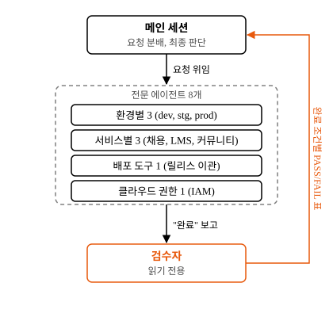
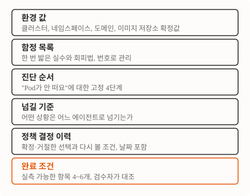

인프라 3개 환경을 혼자 운영하면서 AI 코딩 도구를 쓰다 보니, 새 세션을 열 때마다 같은 함정을 다시 밟고 같은 설명을 다시 하고 있었어요. 그래서 환경과 도메인별로 전문 에이전트를 만들고, 각 에이전트 파일에 환경 값과 함정 목록, 진단 순서, 정책 결정 이력을 적어 뒀어요. 여기에 삼성 테크블로그의 한 명의 개발자가 여러 전문가와 일하는 방법에서 가져온 두 가지, “무엇이 끝난 상태인가”와 “누가 그걸 판정하는가”를 더했어요. 에이전트 파일에 무엇을 넣었고 왜 그렇게 나눴는지, 그리고 실제 장애에서 어떻게 굴러갔는지를 적어요.

지식이 대화 안에만 있으면 세션과 함께 사라져요
문제는 도구가 아니라 기억이었어요. AWS EKS에서 Oracle Cloud의 Kubernetes(OKE)로 옮기면서 dev, stg, prod 세 환경을 새로 세웠어요. 그 과정에서 함정을 7개 만났어요. Keycloak 26이 관리자 계정 환경변수 이름을 바꿨고, Bitnami 차트의 프로브 설정이 기본값과 충돌했고, ArgoCD의 자동 되돌리기(self-heal)는 “이 필드는 무시하라”는 설정만으로는 막히지 않았어요. 하나하나는 해결했어요. 그런데 다음 세션의 AI는 그걸 몰라요. 같은 자리에서 같은 시도를 하고, 저는 “그거 지난주에 안 됐어”를 또 말하고 있었어요.
여기서 말하는 에이전트는 역할별 지시문을 담은 마크다운 파일이에요. 제가 대화하는 메인 세션이 요청을 받으면 키워드로 파일을 골라 하위 세션에 일을 넘겨요. 지금 8개이고 각 170~530줄 정도예요.
환경이 이렇게 갈라져 있어요
- dev, stg, prod 3개 환경에 서비스 4계열(교육 플랫폼 본체, 채용, LMS, 커뮤니티)이 OKE 클러스터 2개에 나뉘어 있었어요. stg는 dev 클러스터의 네임스페이스만 빌려 써요.
- 비밀값을 가져오는 경로가 계열마다 달랐어요. 본체와 채용은 OCI Vault의 값을 Kubernetes Secret으로 동기화하는 도구(External Secrets)를 거치고, LMS와 커뮤니티는 AWS Secrets Manager에서 앱이 직접 읽어요.
- 이미지 저장소도 2개예요. 본체는 ECR, 나머지는 OCIR.
그래서 “비밀값 바꿨는데 왜 안 바뀌어?”의 답이 계열마다 달라요. 프롬프트 하나로 다 다루면 어느 계열에서든 틀린 답이 나와요.
설계
나누는 축: 개발 단계가 아니라 환경과 도메인
삼성 글은 에이전트를 업무 분석, 설계, UI, 프론트엔드, 테스트로 나눴어요. 개발 단계가 축이에요. 저는 그 축을 쓰지 않았어요. 인프라 운영에서 위험한 건 설계를 못 하는 게 아니라 prod에서 dev 명령을 치는 거예요. 그래서 환경(dev, stg, prod)과 도메인(채용, LMS, 커뮤니티, 릴리스 이관, 클라우드 권한)으로 나눴어요.
그 결과가 8개예요. 환경별 3개, 서비스별 3개, 배포 도구 1개, 클라우드 권한 1개. 각 에이전트 파일 맨 위에 트리거 키워드가 있어요. 대화에 “prod”나 특정 도메인, 특정 오류 문구가 나오면 메인 세션이 그 에이전트로 넘겨요. Apply failed with N conflict는 릴리스 이관 담당이 받고, manage repos in tenancy 같은 정책 구문은 권한 담당이 받아요. prod 담당의 키워드 부분을 사내 이름만 지우면 이래요.
description: prod 환경 전문가. 다음 키워드/증상 즉시 트리거: "prod", "*-prod Application",
"<prod 도메인 패턴>", "prod 부트스트랩", "prod RDS / Vault", "prod 트래픽 영향", "prod 진행" …“prod처럼 dev에도 넣어줘”처럼 키워드가 겹치는 문장은 메인 세션이 판단해요. 규칙이 아니라 제 확인에 기대는 부분이에요.
버린 대안은 “환경당 에이전트 하나, 서비스 구분은 프롬프트 안 조건문”이었어요. 3개로 끝나서 가벼워 보였어요. 그런데 지금 LMS 담당과 커뮤니티 담당 파일은 첫 절 제목이 “다른 서비스와 헷갈리지 말 것”이에요. 비밀값 경로가 다르다는 사실을 긴 프롬프트 속 조건문 한 줄로 두면 묻혀요. 파일의 첫 절로 두면 읽혀요.
에이전트 파일에 들어가는 것

환경 값. 클러스터 이름, 네임스페이스, 도메인 규칙, 이미지 저장소 주소, Helm 릴리스 이름을 표로 적어요. 표가 있으면 에이전트가 추측하지 않아요. dev 담당의 표에는 “dev 배포가 참조하는 브랜치는 항상 develop”처럼 한 줄이 사고 하나를 막는 항목도 있어요.
함정 목록. dev 담당에 22개가 번호로 쌓여 있어요. 한 항목은 증상, 원인, 회피법 한 줄이에요. 11번을 사내 이름만 지우면 이래요.
11. **AWS access key 만료** — 자격증명 Secret 의 key 가 invalid 면 토큰 갱신 잡이 ECR 토큰 못 갱신
→ 서비스 전부 ImagePullBackOff. 증상: `InvalidClientTokenId`. 새 key 받아서 Secret 재생성 + values 갱신번호가 있으면 진단 순서에서 “이 증상이면 함정 #11 의심”처럼 가리킬 수 있어요.
진단 순서. “Pod가 안 떠요”에 대한 순서예요. Pod 상태, 이벤트, 이전 로그, Secret 값 검증. 이 네 단계를 고정하고, 각 단계의 출력에서 어느 함정으로 갈지 적어 뒀어요. 순서를 고정하지 않으면 에이전트가 로그부터 파다가 이미지 pull 실패를 놓쳐요.
넘길 기준. 어떤 상황을 어느 에이전트에게 넘기는지 표로 적었어요. dev 담당의 표에서 세 줄만 가져오면 이래요.
| 상황 | 넘길 곳 |
|---|---|
Helm 릴리스 이름 바꾸기, Apply failed with N conflict | 릴리스 이관 담당 |
| stg 네임스페이스의 Application, Secret, Ingress 작업 | stg 담당 |
| prod 환경 작업 | prod 담당 |
반대로 권한 담당은 Terraform이 관리하는 자원이면 CLI 수정을 거절하고, .tf 수정과 terraform plan으로 안내해요.
정책 결정 이력. 확정한 선택, 버린 대안, 버린 대안을 다시 볼 조건을 날짜와 함께 적어요. prod 담당에 10개, 채용 담당에 10개가 있어요.
완료 조건. 아래에서 따로 다뤄요.
결정이 나면 바로 파일에 남기기
정책 결정 이력은 결정이 날 때마다 파일에 들어가야 살아 있어요. 그래서 정책 기록 명령을 하나 만들었어요. 결정 문장을 넘기면 키워드로 영향받는 환경을 골라, 해당 에이전트 파일의 이력 절에 행을 추가하고 개인 메모리에도 같은 내용을 남겨요. 버린 대안이면 다시 볼 조건까지 같이 적어요.
이 명령이 없을 때는 “에이전트한테도 알려줘”를 매번 제가 말해야 했어요. 결정은 났는데 다음 세션의 에이전트는 모르는 상태가 며칠씩 이어졌어요. 에이전트 파일 커밋이 한 달에 24건 나온 때도 있었어요.
번복도 남아요. “비밀 아닌 설정값은 ArgoCD가 관리한다”고 정했다가 며칠 뒤 “모든 값은 Vault에서 온다”로 뒤집은 적이 있는데, 두 행 다 있어요. 앞 행에는 취소 표시와 날짜가 붙어 있어요. 뒤집힌 결정을 지우면 나중에 왜 그 대안이 아닌지 다시 묻게 되니까요.
완료 조건과 검수자, 실행자와 떼어 놓기
이 부분이 삼성 글에서 가져온 거예요. 아래는 설계이고, 실전 기록은 “무엇이 달라졌나” 절에 있어요.
삼성 글의 요지는 “코드를 빨리 뽑는 것보다 역할과 완료 조건을 설계하는 게 중요했다”예요. 예상 4~6주짜리 포털을 5시간에 만들었다는 수치가 붙어 있었어요. 그 기준으로 제 에이전트를 다시 보니 두 가지가 없었어요.
첫째, “끝났다”의 정의가 없었어요. 파일마다 “검증한다”, “승인 받는다” 같은 단어가 적게는 4번, 많게는 26번 나오지만, 항목으로 셀 수 있는 체크리스트는 없었어요. 둘째, 검증을 실행자가 자기 손으로 하고 있었어요. prod 담당이 배포하고 prod 담당이 “정상 확인”이라고 보고하면, 제가 결과를 다시 봐야만 걸러져요.
그래서 두 가지를 했어요. 에이전트마다 ## 완료 조건 절을 넣되 명령으로 실측할 수 있는 항목만 4~6개씩 적었고, 읽기 전용 검수자 에이전트를 하나 추가했어요. prod 담당의 완료 조건은 이래요.
## 완료 조건 (하나라도 미충족이면 "진행 중"으로 보고)
- 사전 dry-run 출력(`helm diff` / `kubectl apply --dry-run=server` / `terraform plan`)이 응답에 첨부됨
- 변경 직전 롤백 기록(release revision·image tag·config 백업)과 롤백 명령이 응답에 포함됨
- sync 전 `kubectl diff` 이미지 대조 기록, 대상 Application `Synced/Healthy`, 비정상 Pod 0, 5분 후 restart 증가 0
- 실요청 재현(로그인 등 실제 사용자 플로우)과 변경 전후 에러율·알림 채널 비교가 응답에 있음
- destructive 작업은 사용자 승인 발언이 대화에 존재
- git 커밋·push 후 `helm upgrade` 로 live 반영 확인 (values push 만으로는 미반영)검수자는 도구가 읽기 계열뿐이고, 프롬프트에 금지 명령 목록이 있어요. 분리는 아직 이 수준이에요. 셸이 열려 있는 이상 프롬프트의 금지는 약속이지 강제가 아니에요. 실행자와 다른 읽기 전용 자격증명을 주는 건 다음 단계로 남겨 뒀어요.
판정은 항목 종류에 따라 달라요. “dry-run 출력이 첨부됨” 같은 항목은 첨부물이 실제로 있는지만 봐요. “Pod 비정상 0” 같은 상태 항목은 실행자 보고문을 믿지 않고 직접 명령을 돌려요. 결과는 항목마다 PASS, FAIL, 해당없음을 표로 내요. 수정이 필요하면 고치지 않고 “어느 에이전트로 돌려보내라” 한 줄로 끝나요.
버린 대안은 “에이전트마다 짝이 되는 검수자 8개”였어요. 검수자가 알아야 할 건 대상 에이전트의 완료 조건 절뿐이라 1개면 돼요. 8개를 만들면 완료 조건이 바뀔 때마다 두 곳을 고쳐야 해요. 검수자가 읽는 것도 8개 파일 전체가 아니라 그중 대상 하나의 완료 조건 절이라, 컨텍스트가 8배로 늘지는 않아요.
실제로 굴러간 장면 둘
prod 장애 하나에서 두 장면을 가져왔어요. 하나는 잘 된 경우, 하나는 에이전트가 시킨 일을 안 하고 돌아온 경우예요.
조사 에이전트가 게이트웨이를 지목한 날
관리자 화면의 API 두 개가 응답이 안 온다는 보고로 시작했어요. 직접 요청해 봐도 응답이 없었어요. 조사 에이전트에게 “읽기 전용 조사만, 수정 금지”로 넘겼어요.
조사 에이전트는 도구를 48번 호출해 6분 만에 돌아왔어요. 결론을 제 말로 옮기면 이래요. 원인은 백엔드 서비스가 아니라 API 게이트웨이인 Kong의 설정 반영에 있었어요. 게이트웨이가 라우팅 설정을 다시 만들 때 토큰 검증 플러그인의 비밀값이 간헐적으로 비어서 읽혔고, 그러면 설정 전체가 거부돼요. 거부되면 게이트웨이는 직전 설정을 계속 써요. 옛 주소록을 계속 들고 있는 셈이에요. 그 주소록에 남아 있던, 이미 죽은 Pod IP로 새 요청이 가고 120초 뒤에 끊겼어요. 애플리케이션 Pod는 재시작 0회에 응답이 전부 200이었고, DB도 CPU와 커넥션이 정상이었어요. 둘 다 원인이 아니었어요.
여기서 기록이 일을 했어요. 보고 끝에 “이건 이전에 겪어서 따로 적어 둔 비밀값 사고와 같은 구조의 재발”이라는 문장이 있었어요. 그 기록은 에이전트 파일의 함정 목록이 아니라 제 개인 메모에 있었어요. 세션 밖에 남아 있는 기록이면 어디에 있든 작동하지만, 에이전트 파일에 있어야 저 말고 다른 사람의 세션에서도 읽혀요. 기록이 없었다면 애플리케이션 로그를 파는 데 시간을 더 썼을 거예요.
수정 에이전트가 재시작을 안 하고 돌아온 날
제가 진행하라고 했어요. 메인 세션은 “Kong ingress-controller를 재시작해 stale 설정을 밀어내라, 단 destructive 조치 직전에는 다시 확인하라”고 수정 에이전트에게 지시했어요.
37번 호출 뒤 돌아온 보고의 첫 줄이에요. 사내 명령 이름 하나만 대괄호로 바꿨어요.
실측 결과, 요청하신 destructive 작업([비밀값 재적용], controller/proxy pod 재시작)은 모두 불필요합니다. 진행하지 않았습니다.
에이전트가 타임라인을 다시 짰더니, 조사가 진행되는 사이에 제가 다른 이유로 실행한 ArgoCD sync가 게이트웨이 전체를 다시 조정했고, 그 시각부터 세 시간째 “설정 반영 성공” 로그가 이어지고 있었어요. 죽은 Pod IP로 가는 요청과 120초 지연은 최근 세 시간 동안 0건이었고, 문제의 API는 바로 응답했어요. 재시작할 이유가 없었어요.
이 장면이 검수자를 만든 이유예요. 에이전트는 시키는 대로 재시작할 수도 있었고, 그랬으면 “재시작 완료, 정상 확인”이라는 보고가 왔을 거예요. 틀린 보고는 아니지만 불필요한 prod 재시작이 한 번 늘었을 거예요. 실측이 먼저였기 때문에 “하지 않았다”가 나왔어요. 그 실측을 실행자의 재량이 아니라 절차로 만드는 게 완료 조건과 검수자예요. 검수자가 있으면 반대 경우에 달라져요. 에이전트가 재시작을 했더라도 “정상 확인”이라는 문장 대신, 재시작 뒤 Pod 상태와 실요청 응답을 검수자가 따로 재서 표로 내요.
비어서 읽힌 비밀값 자체는 그날 따로 고치지 않았어요. 함정 목록에 있는 항목이라, 같은 증상이 다시 나오면 비밀값 재적용부터 하도록 적혀 있어요.
무엇이 달라졌나
| 항목 | 처음 | 지금 |
|---|---|---|
| 에이전트 | 환경별 3개, 각 100줄 남짓 | 환경·도메인별 8개 + 검수자 1개, 각 170~530줄 |
| 함정 지식 | 부트스트랩 함정 7개를 README에 | dev 담당에만 22개, 번호로 진단 순서와 연결 |
| 정책 결정 | 대화에 남고 세션 끝나면 소실 | 정책 기록 명령으로 에이전트 파일에 날짜와 번복까지 기록 |
| 완료 판정 | 실행자가 스스로 “정상 확인” | 실측 항목 4~6개, 읽기 전용 검수자가 대조 |
성과 수치는 아직 없어요. “같은 함정을 다시 밟은 횟수”를 세어 두지 않았고, 검수자는 아직 실전 기록이 없어요. 재는 방법은 정했어요. 검수자 표에서 FAIL이 나온 건수와, 그 FAIL을 실행자 보고문만 봤으면 놓쳤을지를 세션마다 기록할 거예요. 몇 주 쌓이면 다시 쓸게요.
비용도 있어요. prod 담당 파일은 3만 자가 넘어요. 토큰으로 치면 대략 2만 개 안팎이라, 호출 한 번에 그만큼이 먼저 들어가요. 정책 이력이 계속 자라니 오래된 결정은 요약본으로 접는 규칙이 필요해질 거예요. 함정 목록도 마찬가지예요. “배포가 참조하는 브랜치가 맞는지”처럼 명령 한 줄로 검사되는 항목은 프롬프트가 아니라 CI 검사로 내려야 해요. 판단이 필요한 항목만 프롬프트에 남기는 게 맞다고 봐요. 지금 22개 중 몇 개가 그쪽인지는 아직 안 세어 봤어요. 검수자를 거치면 작업 하나에 에이전트 호출이 하나 늘어요. 지금은 모든 에이전트의 완료 조건 절에 검수자를 거치라고 적어 뒀고, 비용이 문제가 되면 dev부터 완화할 생각이에요.
정리
삼성 글의 축(개발 단계)과 제 축(환경과 도메인)은 달랐지만 결론은 같았어요. 에이전트에 지식과 도구를 주는 건 절반이고, 나머지 절반은 “끝났다”를 누가 어떻게 판정하느냐예요. 저는 나누는 축을 사고가 나는 경계선에 맞추고, 완료 조건은 명령으로 셀 수 있는 것만 적고, 판정은 실행자가 아닌 쪽에 맡기는 데까지 왔어요. 처음부터 다시 한다면 에이전트 8개가 아니라 함정 목록 파일 하나부터 만들 거예요. 나머지는 그 파일이 자라면서 필요해졌어요.